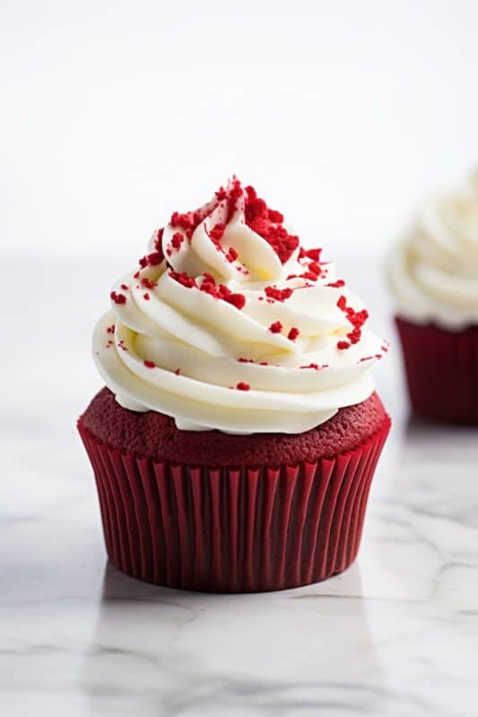
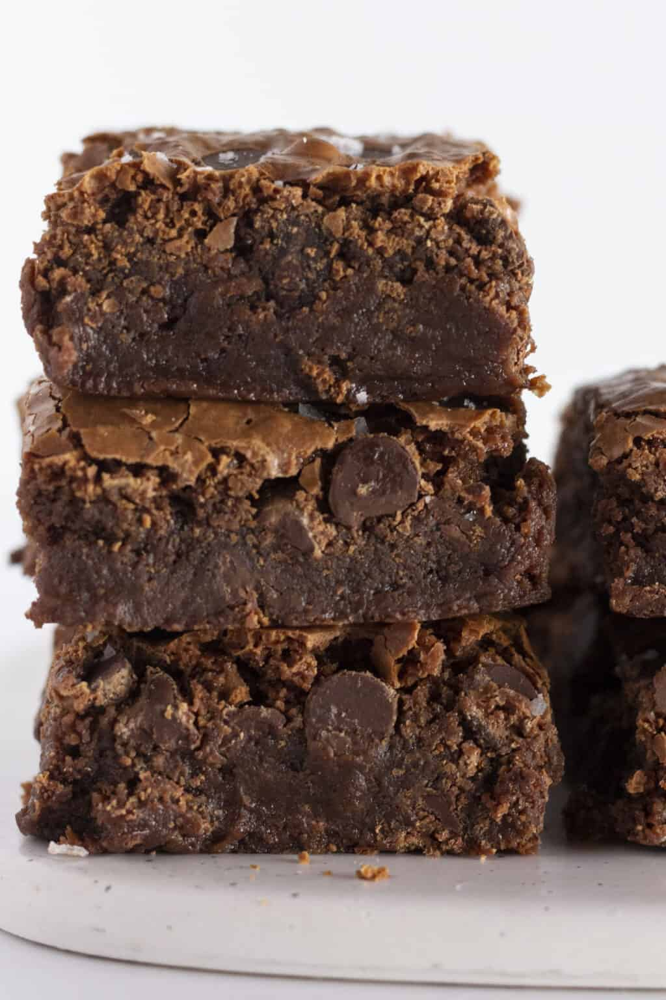
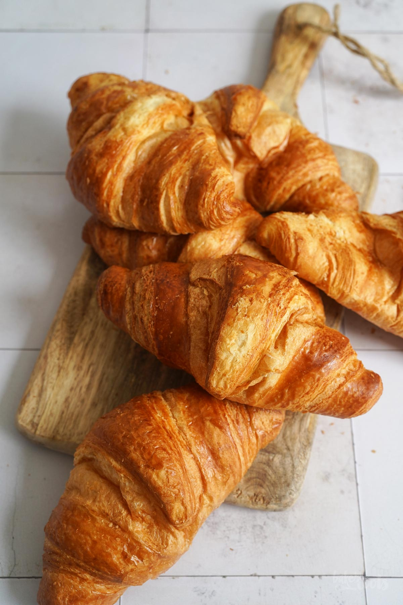
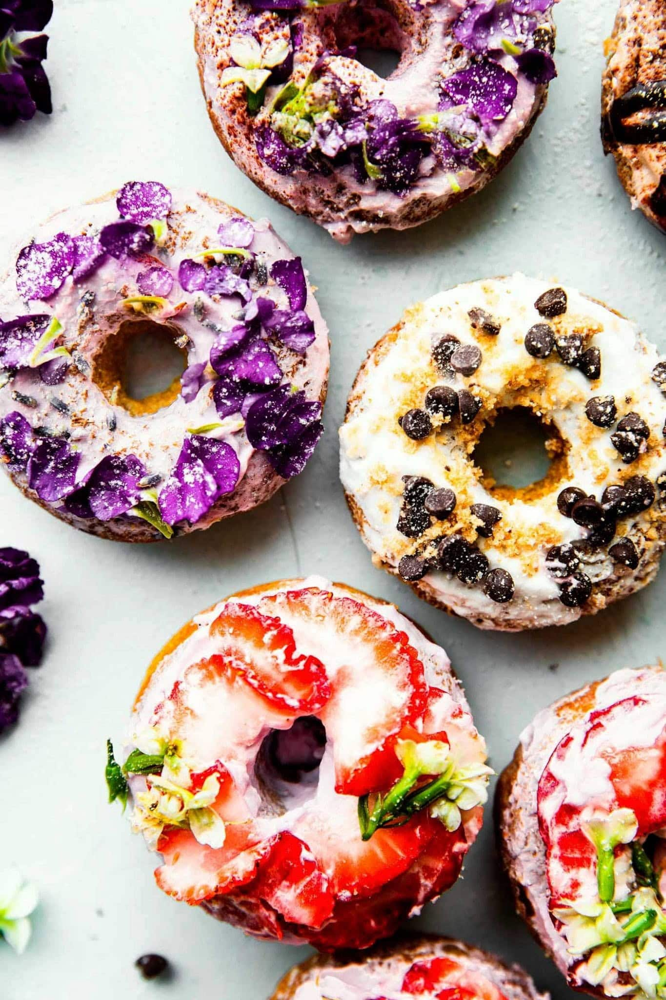
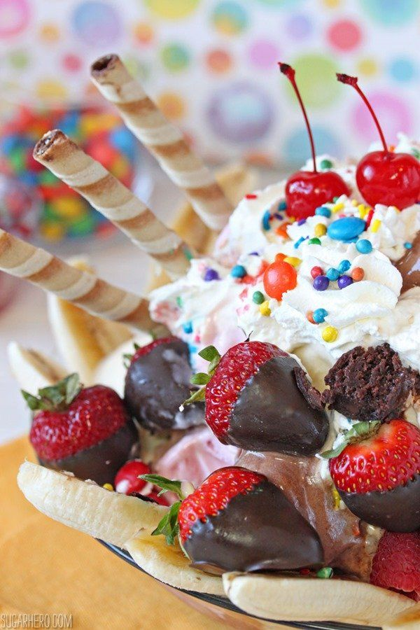
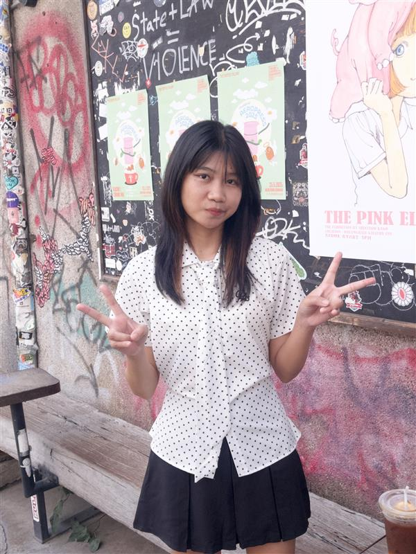

Chocolate Cake

Red Velvet Cupcake

Brownie

Croissant

Donut

Basque Burnt Cheesecake

Ice Cream

Macaron
Cafe near Naresuan University
Desserts play an important role in café culture around the world. They are not only delicious but also bring happiness and comfort to people of all ages. Cafés offer a wide variety of desserts, ranging from classic cakes and pastries to modern sweet creations, allowing customers to enjoy different flavors and textures. Whether enjoyed alone or shared with friends, desserts help create warm and memorable moments.

About Me
My name is Yumi Netnaphit Chaivichit. I am a student who is interested in web design and web development. This website is created as part of a project to practice HTML, CSS, and JavaScript skills. I also enjoy learning about desserts and café culture.